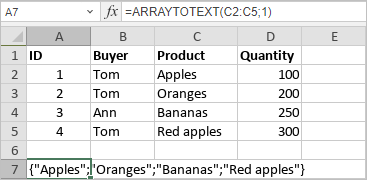

ARRAYTOTEXT funkcija
Funkcija ARRAYTOTEXT je jedna od funkcija za tekst i podatke. Koristi se za vraćanje opsega podataka kao tekstualnog niza.
Sintaksa
ARRAYTOTEXT(array, [format])
Funkcija ARRAYTOTEXT ima sledeće argumente:
| Argument | Opis |
|---|---|
| array | Opseg podataka koji treba vratiti kao tekst. |
| format | Opcioni argument. Moguće vrednosti su navedene u tabeli ispod. |
Argument format može biti jedan od sledećih:
| Format | Objašnjenje |
|---|---|
| 0 | Vrednosti u tekstualnom nizu biće razdvojene zarezom (podrazumevano). |
| 1 | Svaka tekstualna vrednost biće u dvostrukim navodnicima (osim brojeva, true/false vrednosti i grešaka), koristi se tačka-zarez kao razdvajač, a ceo tekstualni niz je u vitičastim zagradama. |
Napomene
Kako primeniti funkciju ARRAYTOTEXT.
Primeri
Slika ispod prikazuje rezultat koji vraća funkcija ARRAYTOTEXT.
